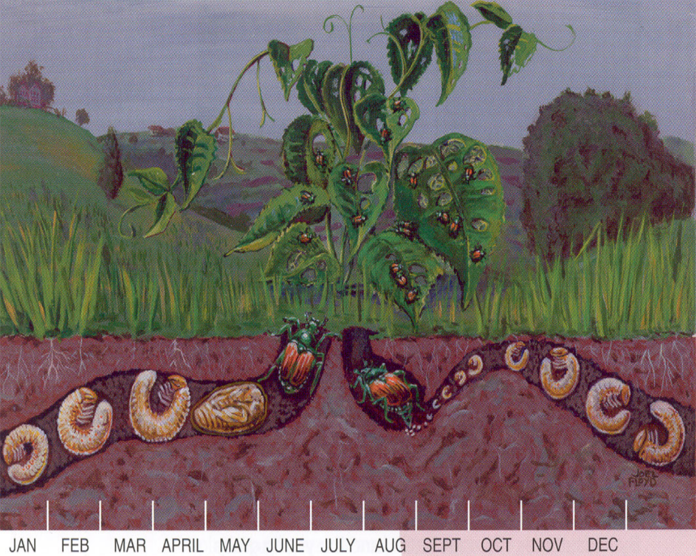
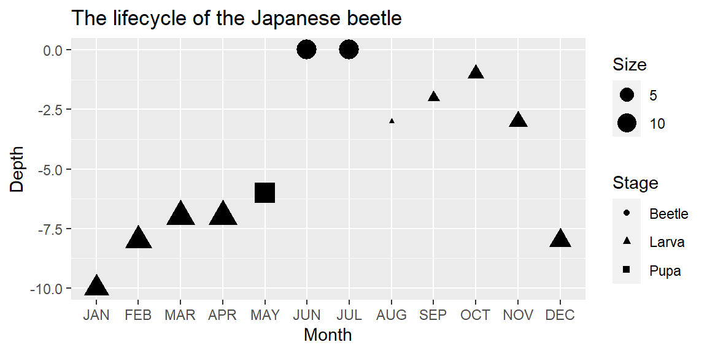
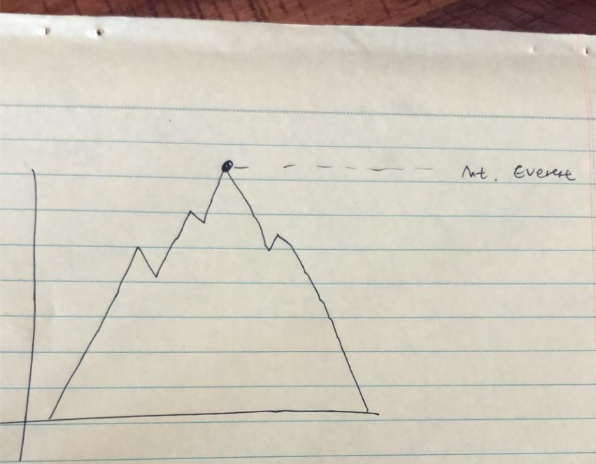
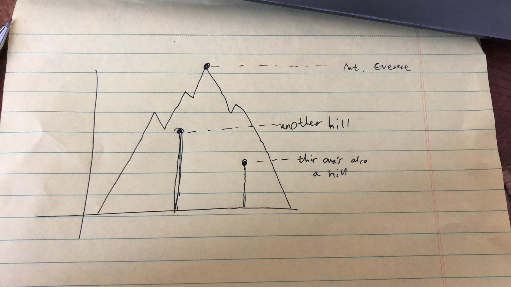
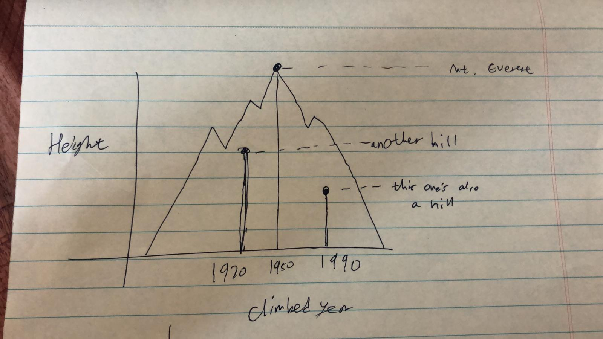

Designing guiding aesthetics
June Choe ![]()
Visualization

Reflections on guiding aesthetics
Admittedly, the plot itself is quite simple, but I learned a lot from this process. So, breaking from the usual format of my tidytuesday blogposts, I want to talk about the background and motivation behind the plot as this was a big step in a new (and exciting!) direction for me that I’d like to document.
Just for clarification, I’m using the term guiding aesthetics to refer to elements of the plot that do not represent a variable in the data, but serves to emphasize the overall theme or topic of the being visualized. So the mountains in my plot do not themselves contain any data, but it’s the thing that tells readers that the plot is about mountains (a valuable, but different kind of info!). But more on that later.
Why bother with guiding aesthetics?
This was my first time adding a huge element to a plot that wasn’t meaningful, in the sense of representing the data. As someone in academia working on obscure topics (as one does in academia), I’m a firm believer in making your plots as simple and minimal as possible. So I, like many others, think that it’s always a huge risk to add elements that are not absolutely necessary.
But as you might imagine, I first fell in love with data visualization not because of how objective and straightforward they are, but because of how eye-catching they can be. Like, when I was young I used to be really into insects. In fact, I read insect encyclopedias as a hobby. That TMI is relevant because those are full of data(!) visualizations that employ literal mappings of data, since those are easy to interpret for children. For example, consider the following diagram of the life cycle of the Japanese beetle from the USDA.

Figure 1: Diagram of the life cycle of the Japanese beetle
As a child, I never appreciated/realized all the data that was seamlessly packed into diagrams like this. But with my Grammar of Graphics lens on, I can now see that:
- The developmental stage at each month is mapped to x
- The depth at which the developing beetle lives at each stage is mapped to y
- The appearance of the beetle at each developmental stage is mapped to shape
- The size of the beetle at each developmental stage is mapped to, well, size
But I could have easily plotted something like this instead:
beetles <- tibble::tribble(
~Month, ~Depth, ~Stage, ~Size,
"JAN", -10, "Larva", 10,
"FEB", -8, "Larva", 12,
"MAR", -7, "Larva", 14,
"APR", -7, "Larva", 14,
"MAY", -6, "Pupa", 11,
"JUN", 0, "Beetle", 12,
"JUL", 0, "Beetle", 12,
"AUG", -3, "Larva", 1,
"SEP", -2, "Larva", 2,
"OCT", -1, "Larva", 4,
"NOV", -3, "Larva", 5,
"DEC", -8, "Larva", 7
)
beetles$Month <- fct_inorder(beetles$Month)
ggplot(beetles, aes(x = Month, y = Depth, size = Size, shape = Stage)) +
geom_point() +
ggtitle("The lifecycle of the Japanese beetle")

Both visuals represent the data accurately, but of course the diagram looks better. And not just because it’s complex, but also because it exploits the associations between aesthetic dimensions and their meanings, as well as the strength of those associations.
For example, the shape dimension literally corresponds to shape, and the shape of the different developmental stages of the beetle are unique enough for there to be interesting within-stage variation and still be recognizable - e.g., the beetle looks different crawling out the ground in June and entering back in August, but it’s still recognizable as a beetle (and the same beetle at that!). This would’ve been difficult if the variable being mapped to shape was something arbitrary and abstract, like the type of protein that’s most produced at a particular stage. The diagram thus exploits the strength of the association between the shape dimension and the literal shapes of the beetle to represent the developmental stages. And it should be clear now that the same goes for y and size.
How about x? There’s no such strong/literal interpretation of the x-dimension - at best it just means something horizontal. So it’s actually fitting that a similarly abstract concept like the passage of time is mapped to x. We understand time linearly, and often see time as the x-axis in other plots, so it fits pretty naturally here.
Lastly, let’s talk about the color dimension. Even though no information was actually mapped to color, we certainly are getting some kind of information from the colors used in the plot. Literally put, we’re getting the information that the grass is green and the soil is brown. Now, that information is actually not representing any data that we care about so it’s technically visual noise, but it helps bring forward the overall theme of the diagram. While this worked out in the end, notice now that you have effectively thrown out color as a dimension that can convey meaningful information. That was a necessary tradeoff, but a well motivated one, since the information that the diagram is trying to convey doesn’t really need color.
Designing guiding aesthetics
I’m hardly the expert, but I found it helpful to think of the process as mediating the tug of war between the guiding aesthetic and the variables in the data as they fight over space in different mapping dimensions.
This meant I had to make some changes to my usual workflow for explanatory data visualization, which mostly goes something like this:
- Take my response variable and map it to y
- Figure out the distribution of my response variables and choose the geom (e.g., boxplot, histogram).
- Map my dependent variables to other dimensions - this usually ends at either just x or x + facet groupings
But if I’m trying to incorporate guiding aesthetics, my workflow would look more like this:
- Start with a couple ideas for a visual representation of the topic (scenes, objects, etc.)
- Figure out the dimensions that the variables in the data can be mapped to
- Figure out the dimensions that each visual representation would intrude in
- Make compromises between (2) and (3) in a way that maximizes the quality of the data and the visual representation
Of course, this kind of flexibility is unique to exploratory data visualization, in particular to the kinds where none of the variable is significant or interesting a priori. Of course in real life there will be a lot more constraints, but because we can assume a great degree of naivety towards the data for #tidytuesday, I get to pick and choose what I want to plot (which makes #tidytuesday such a great place to practice baby steps)!
For illustration, here’s my actual thought process while I was making the #tidytuesday plot.
WARNING: a very non-linear journey ahead!
My thought process
The topic was about Himalayan climbing expeditions, so I wanted my visual to involve a mountain shape. The most obvious idea that came to mind was to draw a mountain where the peak of that mountain corresponded with their height_metres, a variable from the peaks data. It’s straightforward and intuitive! So I drew a sketch (these are the original rough sketches - please forgive the quality!)

Figure 2: The first guiding aesthetic idea
But this felt… a bit empty. I threw in Mount Everest, but now what? I still had data on hundreds of more Himalayan peaks that were in the dataset. Just visualizing Mount Everest is not badly motivated per se (it’s the most famous peak afterall), but it wouldn’t make an interesting plot since there wasn’t much data on individual peaks. I wanted to add a few more mountain shapes, but I struggled to find a handful of peaks that formed a coherent group. I knew that if I wanted to go with the idea of mountain shapes as the guiding aesthetic, I could only manage to fit about a dozen or so without it looking too crowded.
I put that issue aside for the moment and moved on while trying to accommodate for the possibility that I may have to fit in many more peaks. I thought about having a single mountain shape just for Mount Everest, and a point with a vertical spikeline for all other peaks to emphasize the y-axis representing height_metres.

Figure 3: The second guiding aesthetic idea
At this point I started thinking about the x-axis. If I do use points to represent peaks (specifically, peak height), where would I actually position each point? Just randomly along the x-axis? It really started hitting me at this point that the quality of my data was pretty abysmal. Even if I ended up with a pretty visualization, I didn’t think I could justify calling it a data visualization. I felt that it’d be a reach to use complex visuals just to communicate a single variable.
I toyed around with enriching the data being plotted. What if I use size of the dots to represent the average age of climbers who reached the peak, from the memmbers data? Or what if I used shape of country flags on top of the dots to represent the country that first reached the peak, from the expeditions data?
These were all cool ideas, but I kept coming back to the need to make the x-dimension meaningful. It just stood out too much. I didn’t think I could prevent the reader from expecting some sort of a meaning from the positioning of the dots along the x-axis.
So I went back to Step #2. I gathered up all the continuous variables across the three data in the #tidytuesday dataset (peaks, members, expeditions) and evaluated how good of a candidate each of them were for being mapped to x. This was the most time-consuming part of the process, and I narrowed it down to three candidates:
expeditions$members: looked okay at first, but once I started aggregating (averaging) by peak, the distribution became quite narrow. That made it less interesting and not very ideal for mountain shapes (the typical mountain shape is wider than they are tall).members$age: has a nice distribution and a manageable range with no extreme outliers.peaks$first_ascent_year: also has the above features + doesn’t need to be aggregated in some way, so the x-axis would have a very straight forward interpretation.
The first_ascent_year variable looked the most promising, so that’s what I pursued (and ended up ultimately adopting!).

Figure 4: The third guiding aesthetic idea
Now I felt like I had more direction to tackle the very first issue that I ran into during this process: the problem of picking out a small set of peaks that were interesting and well-motivated. I played around more with several options, but I ultimately settled on something very simple - the top 10 most popular peaks. Sure it’s overused and not particularly exciting, but that was a sacrifice that my over-worked brain was willing to make at the time.
And actually, it turned out to be a great fit with my new x variable! It turns out that the top 10 most climbed peaks are also those that were among the first to be climbed (a correlation that sorta makes sense), so this set of peaks had an additional benefit of localizing the range of x to between the 1940s-1960s. And because 10 was a manageable number, I went ahead with my very first idea of having a mountain accompanying each point, where the peaks represent the peak of the guiding aesthetic (the mountain shape) as well as the height_metres and first_ascent_year.
Finally, it came time for me to polish up on the mountains. I needed to decide on features of the mountains like how wide the base is, how many valleys and peaks it has, how tall the peaks are relative to each other, etc. I had to be careful that these superfluous features do not encroach on the dimensions where I mapped my data to - the x and y. Here, I had concerns about two of the mountain features in particular: base width and smaller peaks:
The base width was troubling because how wide the base of the mountain stretches could be interpreted as representing another variable that has to do with year (like the first and last time it was climbed, for example). This was a bit difficult to deal with, but I settled on a solution which was to keep the base width constant. By not having that feature vary at all, I could suppress any expectation for it to carry some sort of meaning. It’s kind of like how when you make a scatterplot with variables mapped to x and y, you don’t imbue any special meaning to the fact that the observations are represented by a circle (point), beacuse all of them are that shape. If they varied in any way, say you also have some rectangles and triangles, then you’d start expecting the shape to represent something meaningful.
The smaller peaks of the mountain shapes were troubling because I was already using the peak to represent the height. It helped that the actual peaks representing the data were also marked by a point and a label of the peak name. But to make it extra clear that the they were pure noise, I decided to randomly generate peaks and valleys, and tried to make that obvious. In the code attached at the bottom of this post, several parameters of the mountain-generating function allowed me to do this. It also helped that I added a note saying that the mountains were randomly generated when I tweeted it, which is kind of cheating perhaps, but it worked!
I've been feeling particularly inspired by this week's #TidyTuesday so I made another plot! This is a simple scatterplot of peak height by year of first ascent, but with a twist: each point is also represented by the peak of a randomly generated mountain! #rstats pic.twitter.com/CqNQjdMYXP
— June (@yjunechoe) September 25, 2020
That wraps up my long rant on how I made my mountains plot! For more context, making the plot took about a half a day worth of work, which isn’t too bad for a first attempt! Definitely looking forward to getting more inspirations like this in the future.
Code
Also available on github
library(tidyverse)
make_mountain <- function(x_start, x_end, base = 0, peak_x, peak_y, n_peaks = 3, peaks_ratio = 0.3, side.first = "left") {
midpoint_abs <- (peak_y - base)/2 + base
midpoint_rel <- (peak_y - base)/2
side_1_n_peaks <- floor(n_peaks/2)
side_2_n_peaks <- n_peaks - side_1_n_peaks -1
side_1_x <- seq(x_start, peak_x, length.out = side_1_n_peaks * 2 + 2)
side_1_x <- side_1_x[-c(1, length(side_1_x))]
side_2_x <- seq(peak_x, x_end, length.out = side_2_n_peaks * 2 + 2)
side_2_x <- side_2_x[-c(1, length(side_2_x))]
side_1_y <- numeric(length(side_1_x))
side_1_y[c(TRUE, FALSE)] <- runif(length(side_1_y)/2, midpoint_abs, midpoint_abs + midpoint_rel * peaks_ratio)
side_1_y[c(FALSE, TRUE)] <- runif(length(side_1_y)/2, midpoint_abs - midpoint_rel * peaks_ratio, midpoint_abs)
side_2_y <- numeric(length(side_2_x))
side_2_y[c(TRUE, FALSE)] <- runif(length(side_2_y)/2, midpoint_abs, midpoint_abs + midpoint_rel * peaks_ratio)
side_2_y[c(FALSE, TRUE)] <- runif(length(side_2_y)/2, midpoint_abs - midpoint_rel * peaks_ratio, midpoint_abs)
if (side.first == "left") {
side_left <- data.frame(x = side_1_x, y = side_1_y)
side_right <- data.frame(x = side_2_x, y = rev(side_2_y))
} else if (side.first == "right") {
side_left <- data.frame(x = side_2_x, y = side_2_y)
side_right <- data.frame(x = side_1_x, y = rev(side_1_y))
} else {
error('Inavlid value for side.first - choose between "left" (default) or "right"')
}
polygon_points <- rbind(
data.frame(x = c(x_start, peak_x, x_end), y = c(base, peak_y, base)),
side_left,
side_right
)
polygon_points[order(polygon_points$x),]
}
tuesdata <- tidytuesdayR::tt_load("2020-09-22")
peaks <- tuesdata$peaks
expeditions <- tuesdata$expeditions
top_peaks <- expeditions %>%
count(peak_name) %>%
slice_max(n, n = 10)
plot_df <- peaks %>%
filter(peak_name %in% top_peaks$peak_name) %>%
arrange(-height_metres) %>%
mutate(peak_name = fct_inorder(peak_name))
plot_df %>%
ggplot(aes(x = first_ascent_year, y = height_metres)) +
pmap(list(plot_df$first_ascent_year, plot_df$height_metres, plot_df$peak_name),
~ geom_polygon(aes(x, y, fill = ..3), alpha = .6,
make_mountain(x_start = 1945, x_end = 1965, base = 5000,
peak_x = ..1, peak_y = ..2, n_peaks = sample(3:5, 1)))
) +
geom_point(color = "white") +
ggrepel::geom_text_repel(aes(label = peak_name),
nudge_y = 100, segment.color = 'white',
family = "Montserrat", fontface = "bold", color = "white") +
guides(fill = guide_none()) +
scale_x_continuous(expand = expansion(0.01, 0)) +
scale_y_continuous(limits = c(5000, 9000), expand = expansion(0.02, 0)) +
theme_minimal(base_family = "Montserrat", base_size = 12) +
labs(title = "TOP 10 Most Attempted Himalayan Peaks",
x = "First Ascent Year", y = "Peak Height (m)") +
palettetown::scale_fill_poke(pokemon = "articuno") +
theme(
plot.title.position = "plot",
plot.title = element_text(size = 24, vjust = 3, family = "Lora"),
text = element_text(color = "white", face = "bold"),
axis.text = element_text(color = "white"),
axis.title = element_text(size = 14),
axis.title.x = element_text(vjust = -2),
axis.title.y = element_text(vjust = 4),
plot.margin = margin(1, .5, .7, .7, "cm"),
plot.background = element_rect(fill = "#5C606A", color = NA),
panel.grid = element_blank(),
)
Citation
@online{choe2020,
author = {Choe, June},
title = {Designing Guiding Aesthetics},
date = {2020-10-13},
url = {https://yjunechoe.github.io/posts/2020-10-13-designing-guiding-aesthetics/},
langid = {en}
}